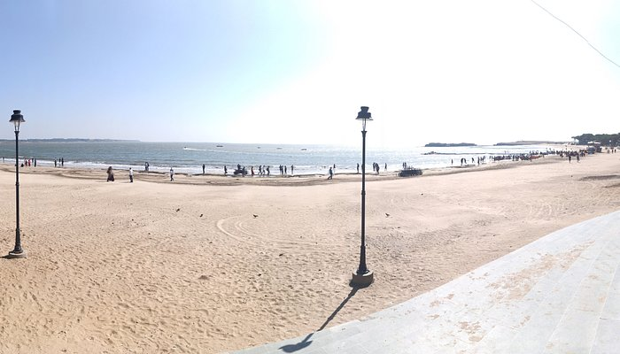
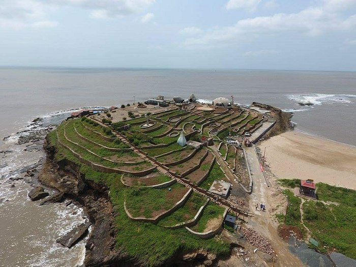
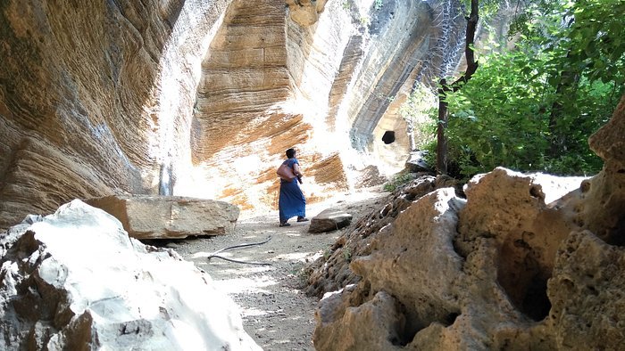

Famous Places
Nagoa Beach
Nagoa is the most beautiful and more popular. It is located in Nagoa hamlet of Village Bucharwada and is 8 kms from Diu. Nagoa a perfect semi circle beach where the gentle lapping waves beckon you to wade into them for a fun filled time of swimming, gambolling or just lolling around the soft sandy shores or find you napping under the rare palm trees filled with the soothing breeze. This beach can be compared with the best of the beaches of Goa.
Diu Fort

The Diu Fortress is a Portuguese-built fortification located on the west coast of India in Diu. The fortress was built as part of Portuguese India's defensive fortifications at the eastern tip of the island of Diu during the 16th century. The fortress, which borders on the town of Diu, was built in 1535 subsequent to a defense alliance forged by Bahadur Shah, the Sultan of Gujarat and the Portuguese when Humayun, the Mughal Emperor attempted to annex this territory. It was strengthened over the years, till 1546. The Portuguese ruled over this territory from 1537 until the Indian invasion of December 1961. Today it is a landmark of Diu and one of the Seven Wonders of Portuguese Origin in the World.
INS Khukri Memorial
Indian Naval Ship Khukri was a frigate of the Indian Navy. During the Indo Pak War in 1971, she fell prey to three torpedoes fired by a Pakistan submarine on 9/12/1971 and sank 40 nautical miles off the coast of Diu taking down with her a crew of 18 Officers and 176 Sailors. Captain Mahendra Nath Mulla, Mahavir Chakra of the Indian Navy, the then Commanding Officer of the ship, chose to go down with the warship. The heroic act of Cap. Mulla and his valiant crew is shining example of unyielding spirit and indomitable courage glorifying the heist traditions of the Indian Navy. The INS Khukri Memorial was inaugurated on 15th December, 1999 and is found erected on the hillock at Chakratirth beach. It is a replica of the INS Khukri Naval Ship.
Naida Caves
Naida caves, Diu are located outside the city wall of the Diu Fort, Caves feature a big network of tunnels with square hewn steps, which is yet to be fully explored, which was constructed by the Portuguese. You can reach Naida caves in Diu through Delwada which is the nearest railway station. The place is also well connected by road.